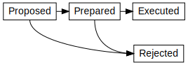

Ledger protocols are responsible for executing the individual transfers that constitute an Interledger transaction. They are also used by connectors to communicate with each other. Ledger layer protocols can differ widely depending on the type of ledger. For example, a central ledger will likely use a very different protocol than a blockchain, but for interledger purposes they are both ledgers and may be accessed using the same primitive operations as defined in this architecture.
For minimal Interledger support, a ledger MUST have the ability to transfer funds from one account to another. All additional functionality can be implemented in a separate "adapter" service. To use ILP in that case, users of the ledger must also trust the adapter. For further details, see Appendix A.
For basic Interledger support, a ledger MUST fulfill the requirements for minimal support and also the following:
The ledger MUST provide authorization holds, conditional upon a cryptographic hash and timeout as described below. During an authorization hold, money is put aside for a specific transfer until that transfer's outcome has been decided.
Transfers using authorization holds can be in four distinct states:

Hint: Authorization holds are the financial equivalent of a two-phase commit.
The ledger MUST be able to release the held funds to the receiver upon receiving a 32-byte preimage whose SHA-256 hash matches a value provided by the sender. The ledger MUST accept ONLY 32 byte preimages or support specifying the fulfillment length when the transfer is prepared.
The ledger MUST support releasing held funds back to the sender after a timeout.
The ledger MUST support attaching a short message or memo to each transfer.
The ledger MUST support notifications to account holders when transfers are prepared, executed, or rejected that affect their accounts.
The ledger MUST fulfill the requirements for basic support and also the following:
The ledger MUST support memos up to 65535 bytes.
The ledger MUST support sending an authenticated message of up to 65535 bytes to the holder of another account on the ledger.
The ledger MUST support a way to look up a fulfillment by condition hash. It SHOULD automatically reject new transfers (that have not been prepared yet) that have an execution condition for which the ledger already knows the fulfillment. This aids in error recovery.
The ledger MUST support preparing, executing, and rejecting transfers in 1 second or less.
The ledger MUST define an ILP Address prefix and scheme such that accounts on the ledger can be addressed using canonical ILP addresses.
It MUST support receivers (and ONLY receivers) rejecting incoming transfers. Receivers MUST be able to submit a rejection message of up to 65535 bytes. The sender of the transfer MUST be notified that the transfer has been rejected and the notification MUST include the rejection message.
Five Bells Ledger Protocol (5BLP) is a RESTful, JSON-based protocol that was developed specifically to provide the minimum functionality required for full Interledger support.
A reference implementation of a ledger using 5BLP can be found here.
Blockchains are distributed, peer-to-peer systems that provide consensus over a single shared state. Any blockchain that supports escrowed funds transfers is in principle capable of acting as a ledger connected to the Interledger.
For example, Bitcoin supports SHA-256 hashlocked escrow transfers which means it can participate in ILP Interledger transactions. Bitcoin's BIP-65 proposal provided the timeouts required for Basic level support.
Legacy protocols often do not provide escrow functionality. In this case, the protocol can either be upgraded, or a highly trusted participant (e.g. a bank) can act as an escrow provider.
There are large numbers of proprietary ledgers out there. This includes web-based and mobile wallets. These types of systems can usually be extended with cryptographic escrow functionality by their operator in order to connect them to the Interledger.
Some proprietary protocols intentionally do not provide general ledger functionality. A common example are stored-value systems, such as gift cards, loyalty points or pre-paid accounts. Such systems can still be connected to the Interledger in a limited capacity. For example a pre-paid account ledger could be set up to act as a receiving ledger, but not as a sending or intermediate ledger.
By creating two classes of users -- resellers and end users -- and only allowing transfers if the sender is a reseller and the recipient is a user, merchants can create Interledger-capable ledgers which behave like stored-value systems. Such systems allow deposits, but do not allow withdrawals.
Not all ledgers support held transfers. In the case of a ledger that doesn't, the sender and recipient of the local ledger transfer MAY choose a commonly trusted party to carry out the hold functions. There are three options:
The sender MAY trust the receiver. The sender will perform a regular transfer in the first step and the receiver will perform a transfer back if the condition has not been met in time.
The receiver MAY trust the sender. The sender will notify the receiver about the intent to transfer. If the receiver provides a fulfillment for the condition before the expiry date, the sender will perform a regular transfer to the receiver.
The sender and receiver MAY appoint a mutually trusted third-party which has an account on the local ledger. The sender performs a regular transfer into a neutral third-party account. In the first step, funds are transfered into the account belonging to the neutral third-party.